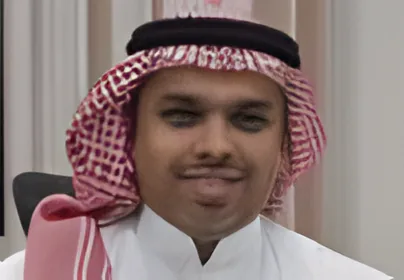
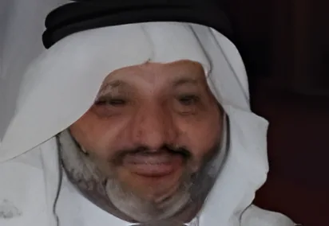
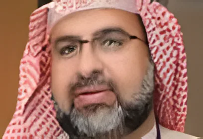
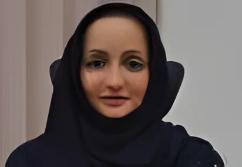

أطباؤنا
عشرون استشارياً وأخصائياً. اطلب الطبيب بالاسم عند الاتصال، أو أخبر الاستقبال بحالتك ليحجز لك في العيادة المناسبة.
 د. محمد الأمينDr Mohamed Al-Aminالجلدية والتجميلدكتوراه في الجلدية والتجميل من الجزائر، دكتوراه من جامعة مونبلييه في فرنسا في الجلدية والتجميل
د. محمد الأمينDr Mohamed Al-Aminالجلدية والتجميلدكتوراه في الجلدية والتجميل من الجزائر، دكتوراه من جامعة مونبلييه في فرنسا في الجلدية والتجميل أ.د. خالد العمرانProf. Khalid Al-Omranالأطفال وحديثي الولادة والخدجبروفيسور طب الأطفال وحديثي الولادة والخدج، زمالة الجمعية الملكية - أدنبرة
أ.د. خالد العمرانProf. Khalid Al-Omranالأطفال وحديثي الولادة والخدجبروفيسور طب الأطفال وحديثي الولادة والخدج، زمالة الجمعية الملكية - أدنبرة أ.د. عبدالله العثمانProf. Abdullah Al-Othmanجراحة العظام والعمود الفقريزمالة الكلية الملكية للجراحين
أ.د. عبدالله العثمانProf. Abdullah Al-Othmanجراحة العظام والعمود الفقريزمالة الكلية الملكية للجراحين أ.د. ليلى التلمسانيProf. Laila Al-Tilmisaniجراحة الأنف والأذن والحنجرةزمالة الكلية الملكية للجراحين (أدنبرة) للأنف والأذن والحنجرة، زمالة جامعة بيرن (سويسرا) لجراحة الأذن وزراعة القوقعة
أ.د. ليلى التلمسانيProf. Laila Al-Tilmisaniجراحة الأنف والأذن والحنجرةزمالة الكلية الملكية للجراحين (أدنبرة) للأنف والأذن والحنجرة، زمالة جامعة بيرن (سويسرا) لجراحة الأذن وزراعة القوقعة- د. فاخرة القحطانيDr Fakhra Al-Qahtaniالأطفال: الكلى والسكراستشارية طب الأطفال تخصص دقيق كلى أطفال وسكر، البورد السعودي، زمالة جامعة الملك سعود في كلى الأطفال
- د. أحلام الغامديDr Ahlam Al-Ghamdiالنساء والولادة والمساعدة على الإنجابزمالة مستشفى الملك فيصل التخصصي للمساعدة على الإنجاب لحالات تأخر الحمل، زمالة الجامعة الملكية بلندن لإبقاء الحمل

د. عبدالله يوسفDr Abdullah Yousefالأطفال والأمراض الصدريةالبورد السعودي والبورد العربي للأطفال، زمالة الأمراض الصدرية والربو للأطفال - سيدني، أستراليا د. سليمان الموسىDr Sulaiman Al-Mousaجراحة العظام وتبديل المفاصلالبورد الكندي في جراحة العظام، زمالة الكلية الملكية بكندا للأطباء والجراحين، زمالة جراحة القدم والكاحل وتبديل المفاصل
د. سليمان الموسىDr Sulaiman Al-Mousaجراحة العظام وتبديل المفاصلالبورد الكندي في جراحة العظام، زمالة الكلية الملكية بكندا للأطباء والجراحين، زمالة جراحة القدم والكاحل وتبديل المفاصل د. رائد البخاريDr Raed Al-Bukhariالروماتيزم (للكبار)الزمالة الكندية من جامعة ألبرتا للروماتيزم، والزمالة الكندية في الحساسية والمناعة السريرية من جامعة مانيتوبا
د. رائد البخاريDr Raed Al-Bukhariالروماتيزم (للكبار)الزمالة الكندية من جامعة ألبرتا للروماتيزم، والزمالة الكندية في الحساسية والمناعة السريرية من جامعة مانيتوبا د. أسامة السلطانDr Osama Al-Sultanأمراض الدماستشاري الأمراض الباطنية وأمراض الدم، زمالة مستشفى الملك فيصل التخصصي لأمراض الدم
د. أسامة السلطانDr Osama Al-Sultanأمراض الدماستشاري الأمراض الباطنية وأمراض الدم، زمالة مستشفى الملك فيصل التخصصي لأمراض الدم
أ.د. حاتم قطبProf. Hatem Qutbالأمراض الصدريةبروفيسور الأمراض الصدرية والعناية المركزة للكبار، الزمالة الكندية للأمراض الصدرية والعناية الحرجة- أ.د. سعود طه الشريفProf. Saud Taha Al-Sharifجراحة المسالك البولية وأمراض الذكورةالزمالة الألمانية في جراحة المسالك البولية
 أ.د. قاسم الداوودProf. Qasim Al-Dawoodطب الأسرة والمجتمعاستشاري طب الأسرة والمجتمع، ماجستير وبائيات وطب المناطق الحارة - جامعة لندن
أ.د. قاسم الداوودProf. Qasim Al-Dawoodطب الأسرة والمجتمعاستشاري طب الأسرة والمجتمع، ماجستير وبائيات وطب المناطق الحارة - جامعة لندن
د. بسام عواريDr Bassam Awariالأطفال وحديثي الولادةاستشاري أطفال تخصص دقيق أطفال حديثي الولادة د. عبدالمحسن العلقDr Abdulmohsen Al-Elqالأمراض الباطنية والسكر والغددبروفيسور الأمراض الباطنية، زمالة الكلية الملكية الأمريكية للغدد الصماء، شهادة الاتحاد العالمي لهشاشة العظام
د. عبدالمحسن العلقDr Abdulmohsen Al-Elqالأمراض الباطنية والسكر والغددبروفيسور الأمراض الباطنية، زمالة الكلية الملكية الأمريكية للغدد الصماء، شهادة الاتحاد العالمي لهشاشة العظام د. ناصر الجيزانDr Nasser Al-Jizanجراحة الأنف والأذن والحنجرةجراحة اللحمية والأحبال الصوتية وجراحات الرأس والعنق، زمالة جامعة بيرن (سويسرا) لجراحة الرأس والعنق
د. ناصر الجيزانDr Nasser Al-Jizanجراحة الأنف والأذن والحنجرةجراحة اللحمية والأحبال الصوتية وجراحات الرأس والعنق، زمالة جامعة بيرن (سويسرا) لجراحة الرأس والعنق
د. منى عاشورDr Mona Ashourجراحة الأنف والأذن والحنجرةاستشارية جراحة الأنف والأذن والحنجرة، زمالة جامعة أولم بألمانيا لعمليات الأنف التجميلية والوظيفية وأمراض الجيوب د. حسام الجهنيDr Hussam Al-Juhaniجراحة المخ والأعصابالزمالة الكندية في جراحة المخ والأعصاب، وزمالة جامعة ماكجيل (كندا) لقسطرة شرايين المخ
د. حسام الجهنيDr Hussam Al-Juhaniجراحة المخ والأعصابالزمالة الكندية في جراحة المخ والأعصاب، وزمالة جامعة ماكجيل (كندا) لقسطرة شرايين المخ- د. سلمى الشرهانDr Salma Al-Sharhanالأنف والأذن والحنجرةاستشارية أنف وأذن وحنجرة، زمالة جامعة يونسي في جراحة الأنف والجيوب الأنفية
- د. شذى محمودDr Shatha Mahmoudجراحة الفم والفكينأخصائية جراحة الفم والفكين
الصور والشهادات كما نشرتها العيادات.
موقعنا
مفتوح الآنبرج تنامي، الدور الأول، شارع الأمير تركي، الخبر
مقابل برج الفوزان وفندق ميركور.
| السبت | 8 ص – 9 م |
| الأحد | 8 ص – 9 م |
| الاثنين | 8 ص – 9 م |
| الثلاثاء | 8 ص – 9 م |
| الأربعاء | 8 ص – 9 م |
| الخميس | 8 ص – 9 م |
| الجمعة | مغلق |
info@elite-clinics.net · ص.ب 4231 الخبر 34423
برج تنامي، شارع الأمير تركي